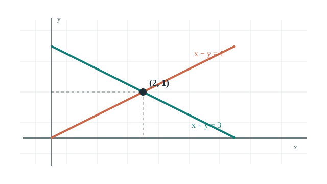

线性方程组与高斯消元
线性方程组的解，是若干超平面的公共交点。高斯消元把几何问题变成一组保持解集不变的行变换，让我们系统判断唯一解、无解和无穷多解。
先提出问题：两条直线为什么可能没有交点、交于一点或重合？
一个二元一次方程表示平面上的一条直线。两个方程组成的系统，就是寻找两条直线的公共点。解的数量来自几何关系，而不是求解算法本身。
代数上写成 Ax=b；几何上是把 A 的列向量按未知数系数组合，看看能否得到 b。消元正是让这个判断更容易执行的系统方法。
先看图形：交点就是共同解

几何分类两条不平行且不重合的直线有一个交点；平行且不同没有公共点；重合则每个线上点都是解。三维及更高维中，方程对应超平面，解集是这些超平面的交。
建立数学语言：Ax=b 与增广矩阵
把所有未知数放入列向量 x，把方程系数放入矩阵 A，常数项放入 b：
式 1
例如：
增广矩阵把系数与常数并排写出：
允许的三种初等行变换
- 交换两行；
- 某一行乘以非零常数；
- 某一行加上另一行的倍数。
这些操作等价于把方程重新排序、把等式两边同时乘非零数、或用一个方程替换为它与另一方程的线性组合，因此不会改变解集。
推导与例题：把方程组化成阶梯形
从增广矩阵开始，第二行减第一行，再把第二行除以 −2：
最后用第一行减第二行，得到 x=2、y=1。把结果代回原方程：
解的结构判定系统一致（至少有一个解）当且仅当 rank(A)=rank([A|b])。若这个共同秩等于未知数个数 n，则解唯一；若共同秩小于 n，则有自由变量，解无穷多。
交互实验：逐步执行行变换
按“下一步”查看每个阶段。每一次操作都对应等价方程变换；最终阶梯形暴露主元位置。
消元过程
初始增广矩阵
R₁: x + y = 3；R₂: x − y = 1。
[ 1 1 | 3 ] [ 1 -1 | 1 ]
两个方程都有 x 项，选择第一列作为第一个主元列。
消去第二行的 x
执行 R₂ ← R₂ − R₁。第一列的第二个元素变成 0。
[ 1 1 | 3 ] [ 0 -2 | -2 ]
这一步没有改变解集，只把第二个方程改写为 −2y=−2。
主元化为 1
执行 R₂ ← −R₂/2，再执行 R₁ ← R₁−R₂。
[ 1 0 | 2 ] [ 0 1 | 1 ]
读出 x=2、y=1。两个变量列都是主元列，没有自由变量。
步骤 1 / 3
边界与易错点
- 不是所有系统都有解。 出现 [0 0 … 0 | c] 且 c≠0 时，得到矛盾。
- 自由变量不等于“随便选答案”。 它是解空间维数大于零的结构信息。
- 主元数量是秩。 不是矩阵元素中非零数字的数量。
- 数值计算要考虑稳定性。 浮点算法常用部分选主元，避免除以过小的主元；手算中的精确行变换与数值算法需区分。
自测：三种解的情况
题目：x+y=2，2x+2y=5 有几个解？
无解。第二行减去第一行的两倍得到 0=1，增广矩阵秩大于系数矩阵秩。
题目：x+y=2，2x+2y=4 有几个解？
无穷多解。第二个方程是第一个的两倍，只有一个独立约束；可令 y=t、x=2−t。